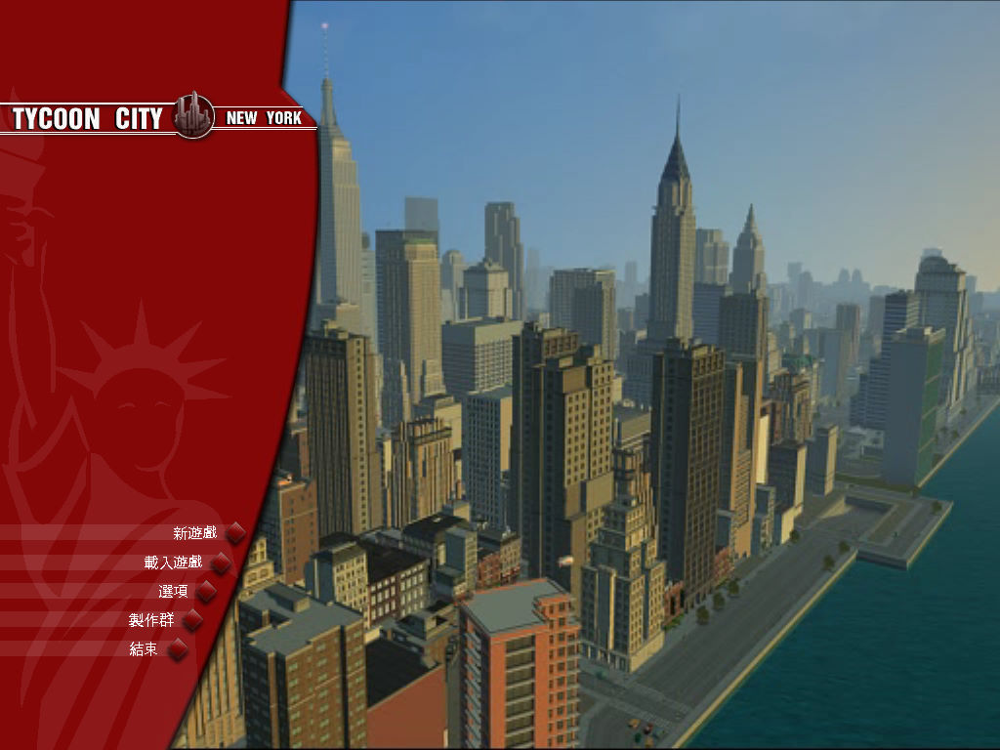
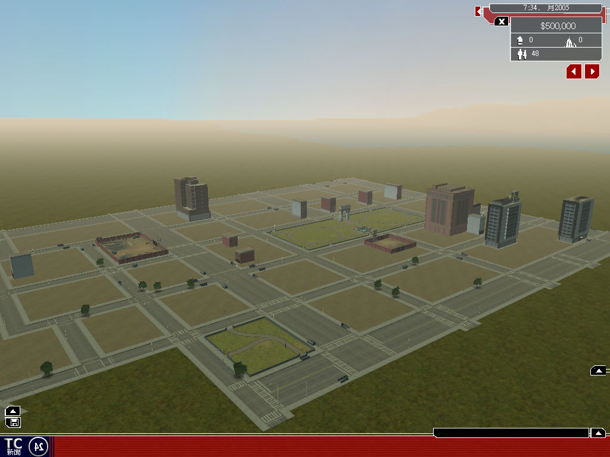

名稱：城市夢想家：紐約／城市大亨：紐約／紐約城市大亨 (Tycoon City: New York，中文／英文版) 簡介：Deep Red 2006年出品的城鎮建造經營模擬遊戲，由Atari代理發行，台灣則由英寶格 中文化並代理發行 [待補]。   保護：光碟SecuROM 7.20 備註：繁中版為1.1.0.6版 檔案：nocd1105_eng.rar = 英文1.1.0.5免光碟檔（繁中版不適用）

